UNIVERSE
SANTA CRUZ
UNIVERSE
SANTA CRUZ
Ganadora
Daniela Martinez
Miss Universe Santa Cruz 2026
Edición 2026
Trece candidatas.
Una gala inolvidable.
El comienzo de una nueva etapa
para Miss Universe Santa Cruz.
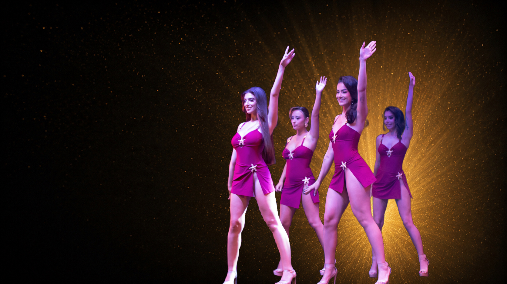

La gala
La primera edición de Miss Universe Santa Cruz se celebró el 6 de julio de 2026 en el Auditorio Juan Carlos I de Arafo. Trece candidatas participaron en una gala diseñada para poner en valor la presencia, la confianza, la preparación y la capacidad de representación de cada una.
Nuestra ganadora
Daniela fue proclamada primera Miss Universe Santa Cruz y pasó a representar oficialmente a la organización durante su año de reinado.
Conoce a nuestra reinaTop 3
Daniela, Danna y Valeria forman el Top 3 oficial de la edición 2026. Las tres permanecen vinculadas a la organización durante el año de reinado, participando en actos, proyectos y oportunidades de representación.
Ganadora
Miss Universe Santa Cruz 2026
Primera finalista
Integrante del equipo de reinado 2026
Segunda finalista
Integrante del equipo de reinado 2026
Proyección nacional
La edición 2026 no solo eligió a Miss Universe Santa Cruz. También abrió el camino para que otras candidatas de nuestra gala alcanzaran el escenario nacional.
Miss Universe Santa Cruz 2026
Miss Universe Galicia 2026
Miss Universe País Vasco 2026
Candidatas oficiales
Cada candidata contará con una breve presentación personal, edad, procedencia e Instagram cuando esos datos estén preparados para publicación.
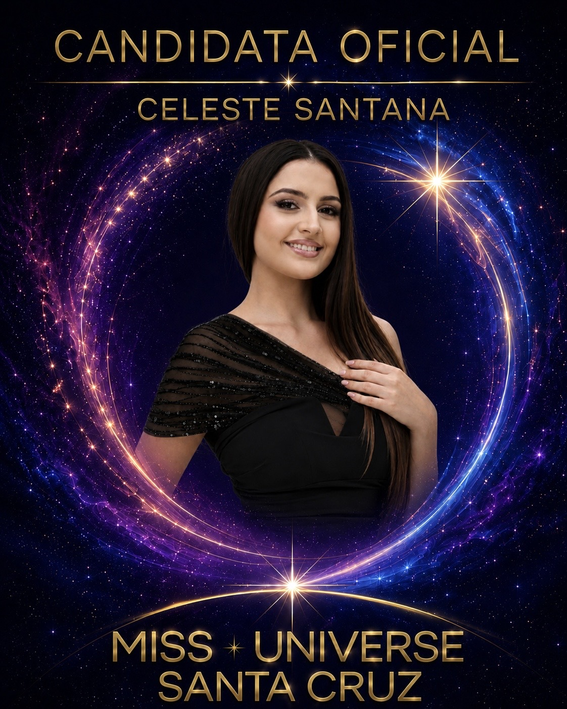
Estudia Educación Infantil y compagina su formación con experiencia en atención al público. Apasionada por el deporte y el crecimiento personal, defiende la inclusión, la autenticidad y sentirse comprendido, valorado y libre de ser uno mismo.
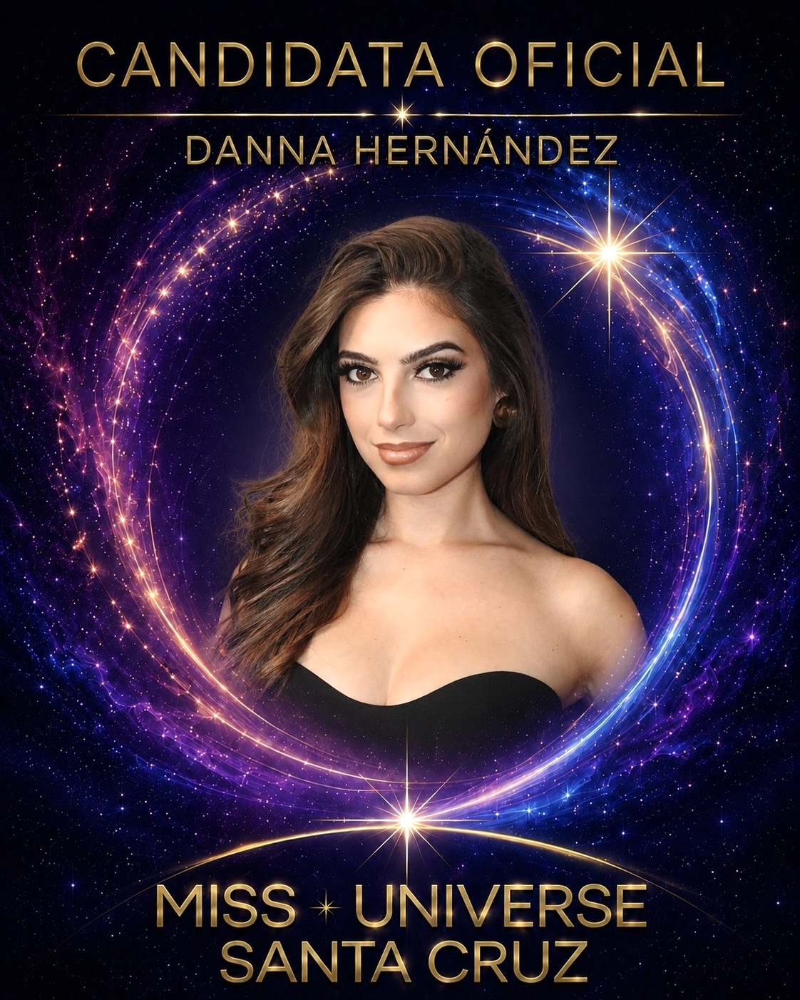
Estudia Ingeniería Informática y afronta su formación con constancia y dedicación. Familiar y aventurera, disfruta viajar, la playa y la lectura, y defiende la autenticidad, la perseverancia y la pasión por alcanzar sus metas.
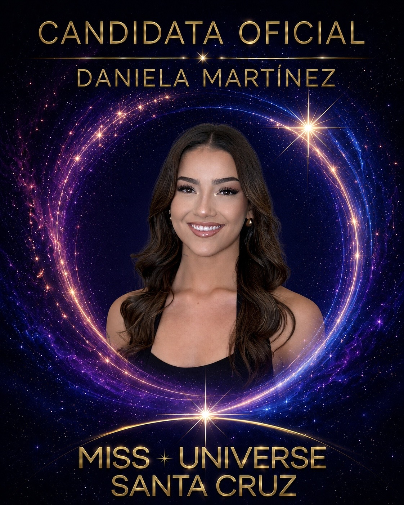
Estudia Ciencias de la Actividad Física y el Deporte y vive el deporte con disciplina y constancia. Disfruta viajar y compartir tiempo con los suyos, afrontando cada reto como una oportunidad para crecer y superarse.
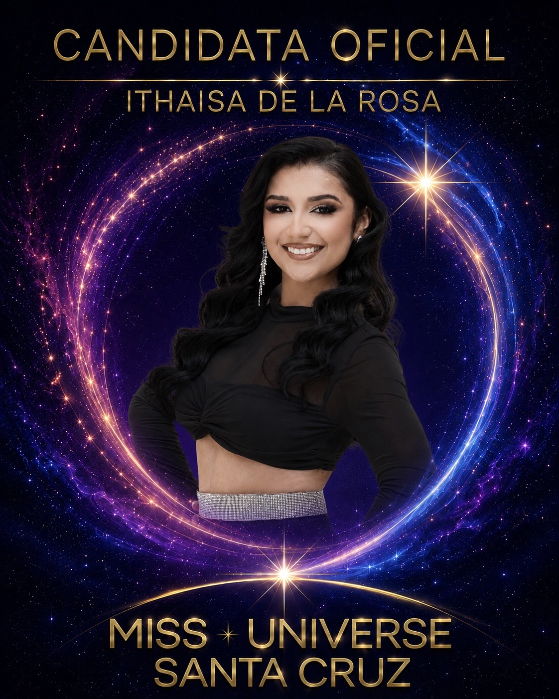
Monitora y profesora de baile, vive la danza como una forma de expresión, creatividad y confianza. Disfruta enseñar y compartir su pasión con nuevas generaciones, afrontando cada reto con disciplina, constancia y entrega.
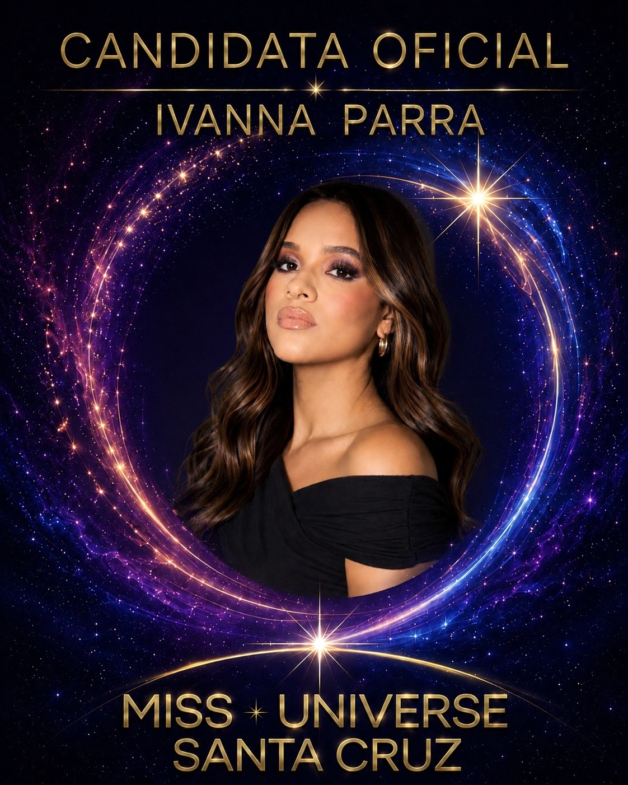
Creadora de contenido apasionada por la belleza, la moda y la creatividad. Su experiencia entre diferentes culturas ha fortalecido su carácter adaptable y seguro, afrontando cada etapa con autenticidad, perseverancia y confianza en sí misma.
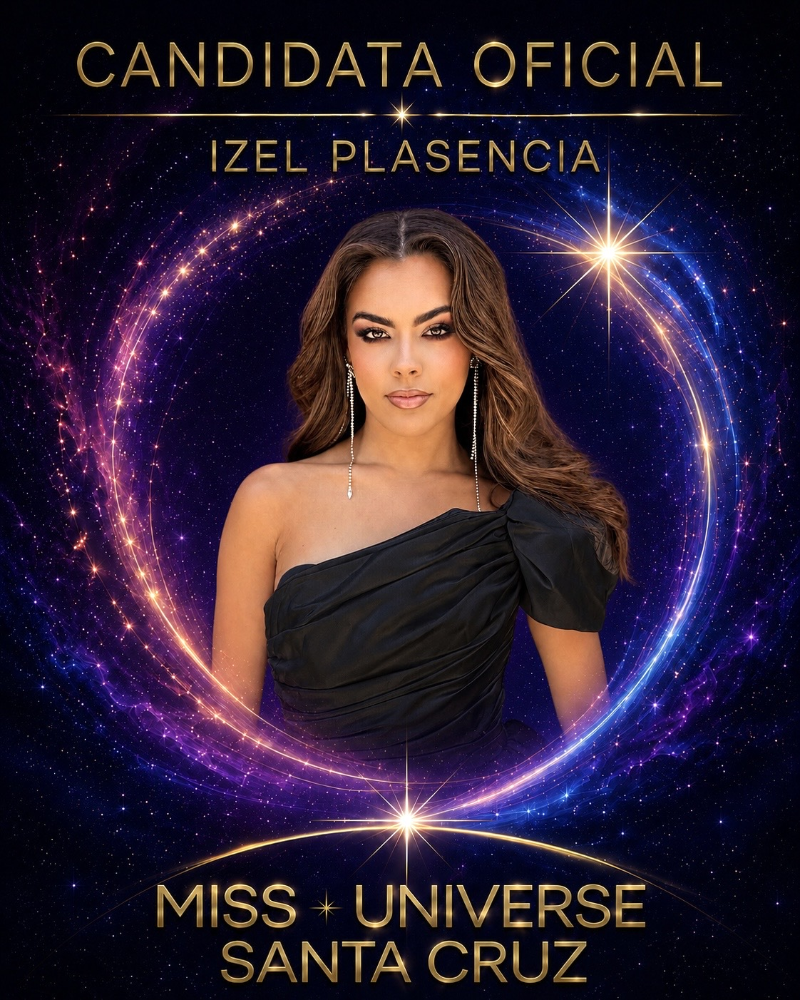
Educadora infantil, dinámica y comprometida con su crecimiento personal. Disfruta descubrir nuevos lugares, bailar y afrontar nuevos retos, guiándose por una mentalidad positiva, la autenticidad y la determinación para avanzar hacia sus metas.
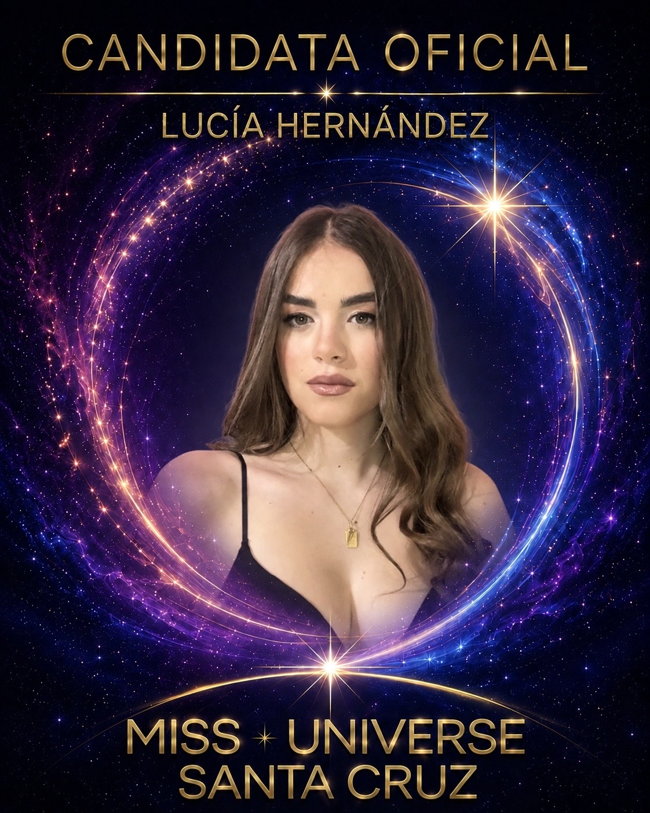
Estudia Radioterapia, una formación que refleja su sensibilidad y vocación de ayuda. Creativa y enérgica, disfruta la música, la moda, el maquillaje y el baloncesto, afrontando su crecimiento con disciplina, confianza y determinación.
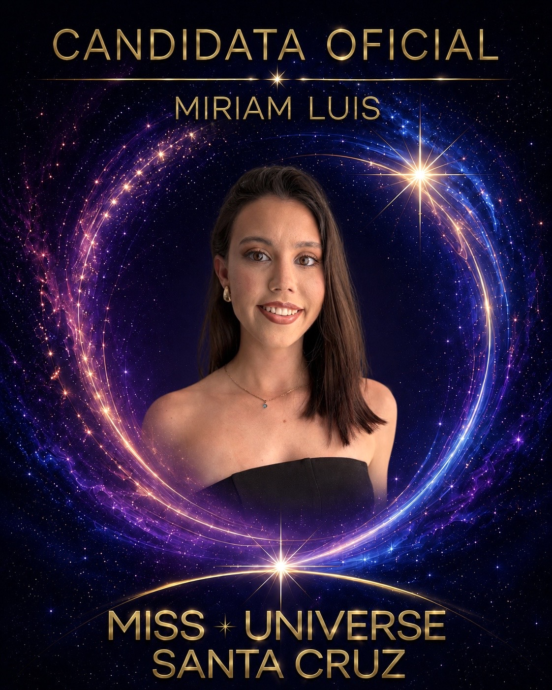
Compagina su trabajo en atención al cliente con sus estudios de Confección y Moda, donde desarrolla su creatividad. Apasionada por el diseño y el patinaje, afronta sus metas con dedicación, autenticidad y espíritu libre.
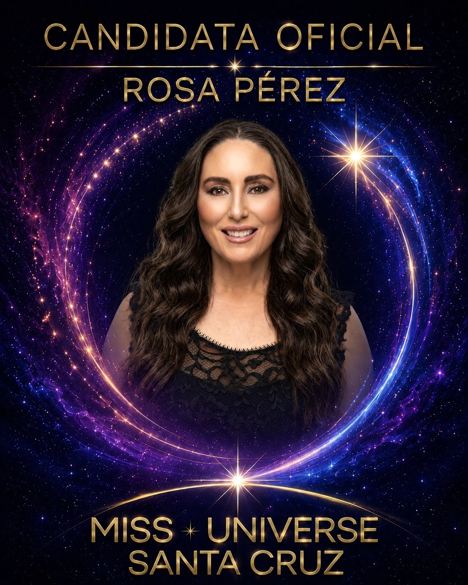
Docente, tallerista y escritora, dedica su trayectoria a la formación y al desarrollo de proyectos. Apasionada por la lectura, los viajes y la cultura, afronta nuevos retos con autenticidad, constancia y vocación de inspirar.
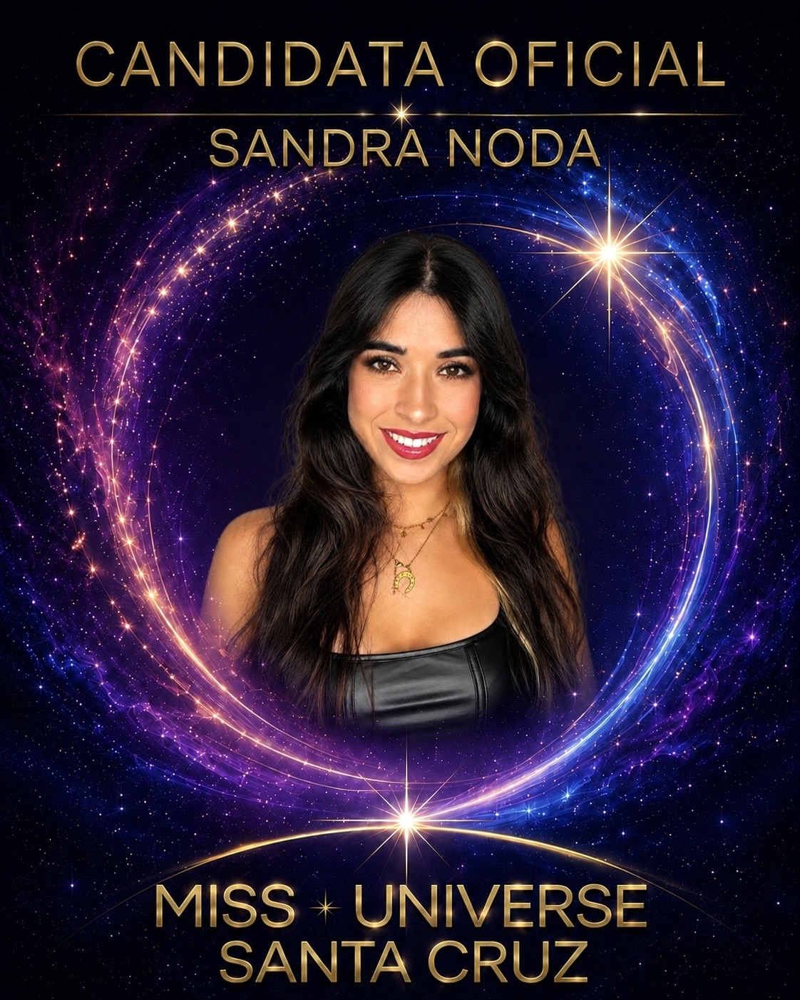
Graduada en Educación Infantil, mantiene una clara vocación por seguir aprendiendo y creciendo. Disfruta viajar, hacer ejercicio y descubrir nuevas culturas, afrontando cada reto con disciplina, perseverancia, autenticidad y deseo de superación.
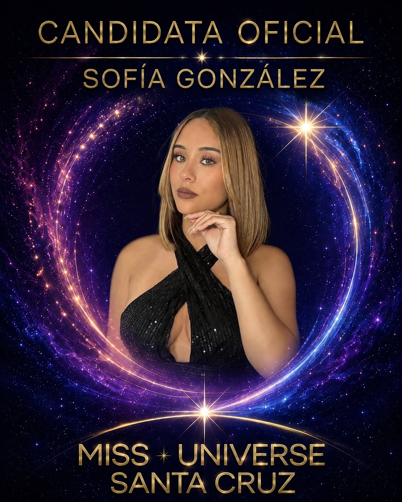
Estudiante de Bachillerato, combina su formación con el fútbol sala y su interés por el maquillaje. Tranquila, empática y segura de sí misma, afronta nuevas experiencias con autenticidad, disciplina y deseo de seguir creciendo.
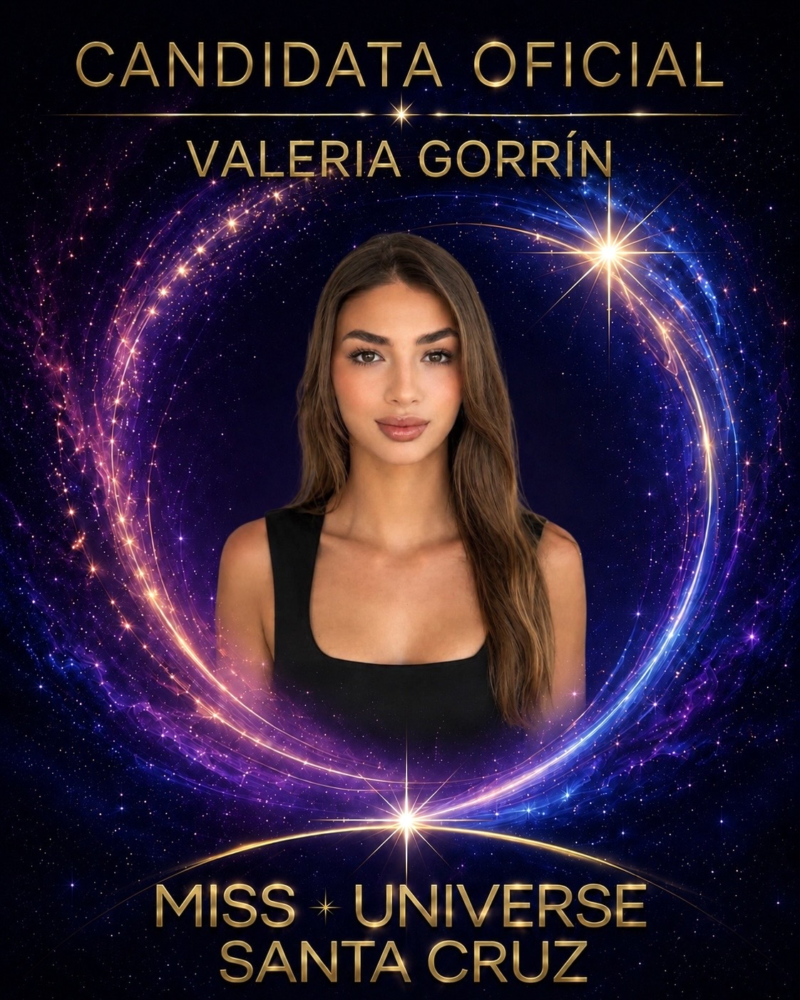
Asesora de ventas especializada en parafarmacia, destaca por su empatía y cercanía. Apasionada por la moda, la belleza, el deporte y los viajes, construye sus metas con responsabilidad, constancia, autenticidad y determinación.
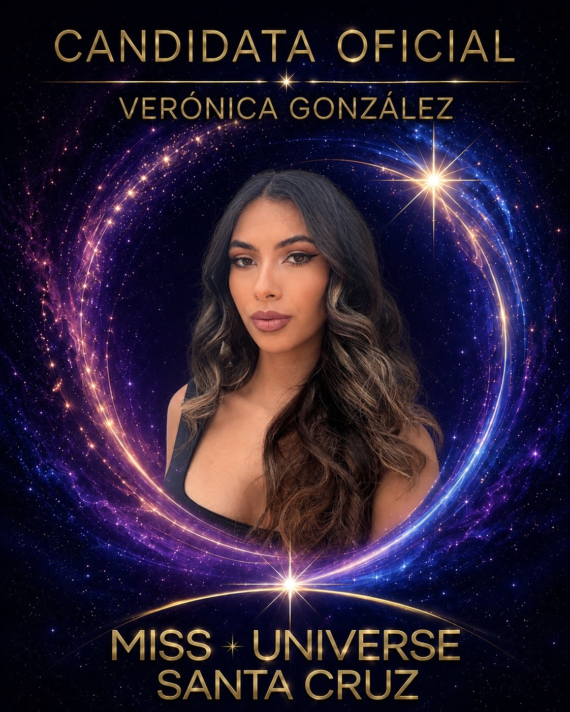
Estudia Marketing y se forma en cámara, combinando su lado creativo con su interés por conectar con las personas. Disfruta el dibujo, el mundo del motor y los animales, y afronta sus metas con perseverancia, autenticidad y actitud positiva.
Desarrollo de la gala
Apertura oficial con todas las candidatas.
Presentación individual ante el público y el jurado.
Seguridad, presencia escénica y pasarela.
Elegancia, estilo y proyección.
Selección de las cinco candidatas finalistas.
Comunicación, seguridad y capacidad de respuesta.
Última fase antes de la decisión final.
Proclamación de Daniela Morales como Miss Universe Santa Cruz 2026.
Jurado oficial
Equipo oficial
Colaboradores oficiales
El comienzo de una historia
Una primera gala, trece candidatas y una organización que continúa creciendo con nuevas oportunidades, nuevos proyectos y el compromiso de seguir representando a Santa Cruz.